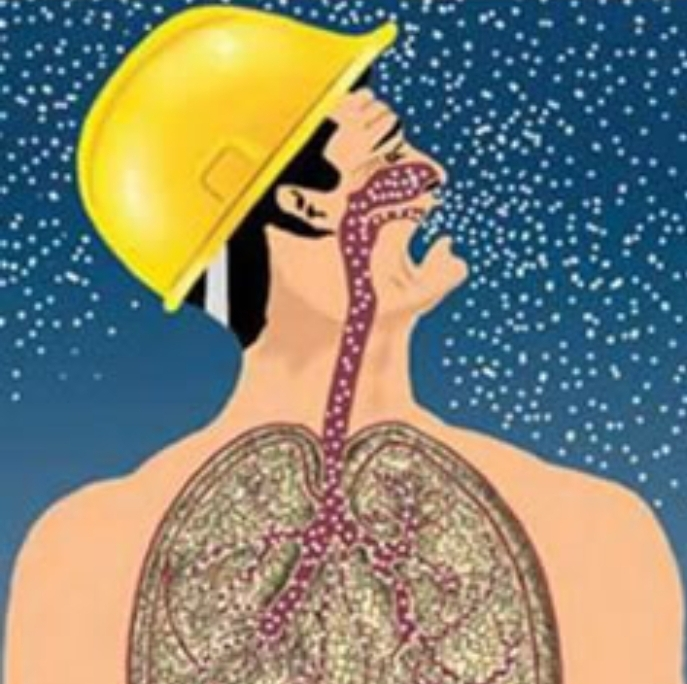

APPARATO RESPIRATORIO
Le microplastiche rappresentano una crescente preoccupazione per l’apparato respiratorio,
poiché l’inalazione è una delle principali vie di esposizione.
L’aria può contenere particelle plastiche provenienti da tessuti sintetici,
pneumatici e polveri urbane.

Ingresso e deposizione
Le microplastiche si depositano in diverse parti del sistema respiratorio:
- Particelle grandi: restano nelle vie aeree superiori
- Particelle medie: raggiungono bronchi e trachea
- Particelle piccole: arrivano agli alveoli
Interazione con i tessuti
Macrofagi alveolari
I macrofagi tentano di eliminare le particelle,
ma la loro persistenza provoca infiammazione continua.
Infiammazione e stress ossidativo
Le microplastiche inducono infiammazione cronica e produzione di ROS:
- Danno alle cellule polmonari
- Alterazione del surfattante
- Possibili mutazioni cellulari
Compromissione delle difese
- Riduzione della clearance mucociliare
- Passaggio nel sangue (traslocazione)
Possibili conseguenze
- Malattie respiratorie croniche
- Fibrosi polmonare
- Maggiore rischio di infezioni
- Effetti sistemici